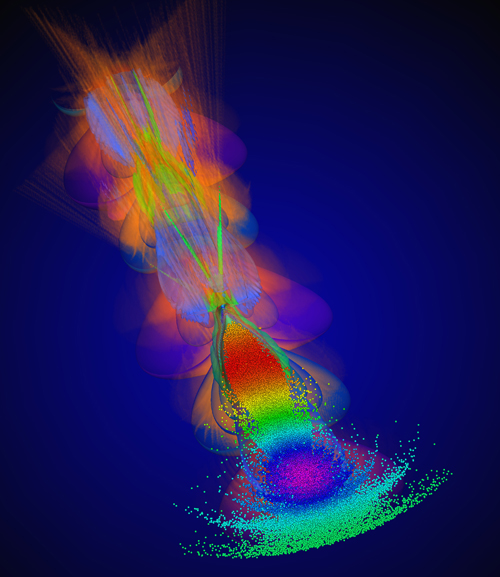

The UCLA Particle-in-Cell (PIC) and Kinetic Simulation Software Center (PICKSC) uses and develops simulation and data science tools to make fundamental discoveries in plasma based acceleration, plasma based light sources, plasma astrophysics, intense laser and plasma interactions, the nonlinear optics of plasmas, and high fidelity simulation. The Center is also committed to making its software available to others to accelerate the rate of scientific discovery and to provide unique educational tools. We are users and developers of OSIRIS, UPIC, QuickPIC, and QPAD and a set of Jupyter notebooks aimed at education. If you like more information on this software please look at the software page.
PICKSC is housed within the UCLA Departments of Physics and Astronomy and of Electrical and Computer Engineering. It is co-led by Professors W.B. Mori and E. Paulo Alves.We are closely connected with the UCLA Laser-Plasma Group led by Professor C. Joshi.


Latest news
KNL Timings: PICKSC researchers have been updating our software to take full advantage of the many-core Intel Knight’s Landing (KNL) nodes. An OpenMP 3D electrostatic code from UPIC 2.0 has achieved a performance of 850 psec/particle-step on a single Intel KNL node. On a large memory KNL such as the 96 GB node on the Cori machine at NERSC, a PIC simulation with a billion particles will run in about one second per time step. A new branch of QuickPIC has also been compiled and run on Cori at NERSC. On a single KNL node with 68 threads, the total time spent on one particle per step is 3.82 ns (including 1 iteration).
Fortran OpenPMD File Writers: We have written an open source program that contains Fortran interfaces for parallel writing of 2D/3D mesh field data and particle data into HDF5 files using the OpenPMD standard. The software is open source and available on our GitHub repositories here.

Latest Publications
T. N. Dalichaouch, X. L Xu, A. Tableman, F. Li, F. S. Tsung, and W. B. Mori, "A multisheath model for highly nonlinear plasma wakefields", PHYSICS OF PLASMAS 28, 063103 (2021). 10.1063/5.0051282
F. Li, V. K. Decyk, K. G. Miller, A. Tableman, F. S. Tsung, M. Vranic, R. A. Fonseca and W. B. Mori, "Accurately simulating nine-dimensional phase space of relativistic particles in strong fields", JOURNAL OF COMPUTATIONAL PHYSICS 438, 110367 (2021). 10.1016/j.jcp.2021.110367
J. L. Shaw, M. A. Romo-Gonzalez, N. Lemos, P. M. King, G. Bruhaug, K. G. Miller, C. Dorrer, B. Kruschwitz, L. Waxer, G. J. Williams, M. Ambat, M. M. McKie, M. D. Sinclair, W. B. Mori, C. Joshi, H. Chen, J. P. Palastro, F. Albert and D. H. Froula, "Microcoulomb (0.7 +/- 0.4/0.2 mu C) laser plasma accelerator on OMEGA EP." SCIENTIFIC REPORTS 11, 7498 (2021). 10.1038/s41598-021-86523-5